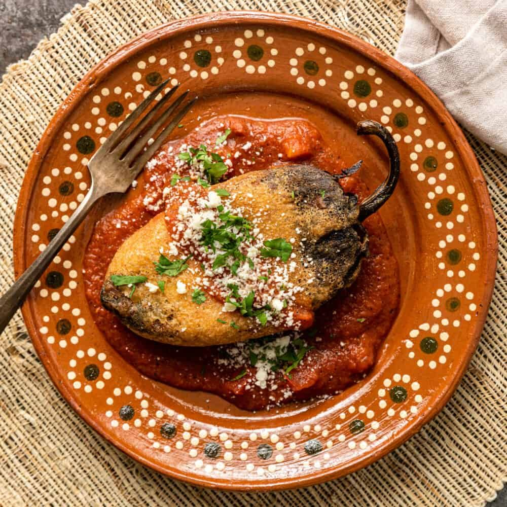

Chiles rellenos
Ingredientes
- Chiles poblanos
- Queso (oaxaca, panela, etc.)
- Harina
- Huevos (claras y llemas separadas)
- Aceite para freir
Preparación
- Asa los chiles: Ásalos directamente sobre el fuego hasta que la piel se ponga negra. Mételos en una bolsa de plástico para que suden, luego retira la piel, las semillas y las venas.
- Rellena: Rellena cada chile con el queso y pásalos por harina.
- Capea: Bate las claras a punto de nieve y luego añade las yemas.
- Fríe: Sumerge cada chile en el huevo batido y fríelos en aceite caliente hasta que estén dorados.
- Sirve: Retira el exceso de grasa y sírvelos solos o bañados en salsa de jitomate.